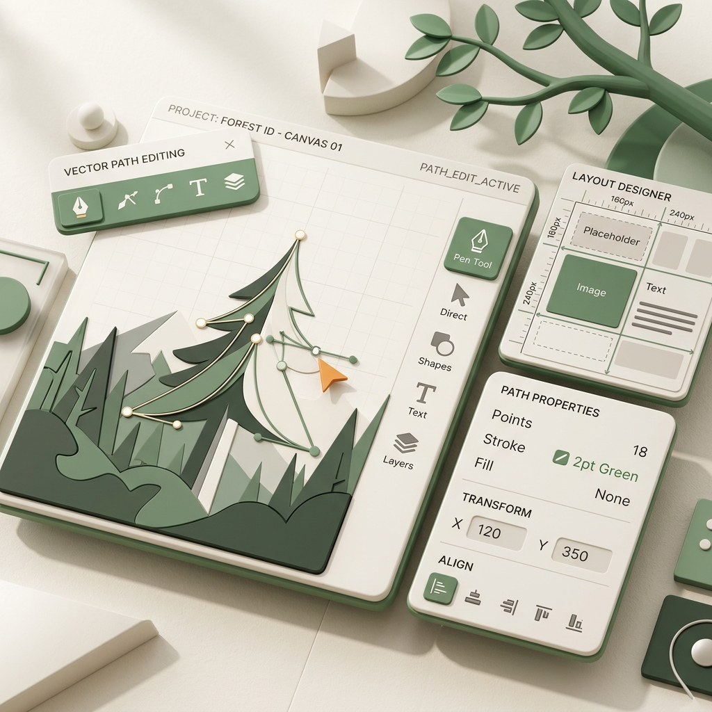

Hồ Anh Khoa
Ngành Khoa học máy tính | Trường Đại học Công nghệ
Lớp: K70-I-CS7
"Làm chủ các công cụ công nghệ số và Trí tuệ nhân tạo thế mới để bứt phá tư duy và tối ưu hóa năng suất học tập."
Thông tin cá nhân
- Họ và tên: Hồ Anh Khoa
- Trường học: Trường Đại học Công nghệ (UET)
- Ngành học: Khoa học máy tính
- Lớp học: K70-I-CS7
- Sở thích: Nghiên cứu công nghệ, khám phá các mô hình Trí tuệ nhân tạo, thiết kế sản phẩm số trực quan, đọc sách khoa học và chơi thể thao.
Mục tiêu học tập
Làm chủ các ứng dụng đám mây và công cụ thiết kế truyền thông số cơ bản. Nâng cao tư duy tương tác hiệu quả với các trợ lý AI thông qua Prompt Engineering, tạo nền tảng vững chắc để ứng dụng vào việc học tập chuyên sâu ngành Khoa học máy tính.
Mục tiêu Portfolio
Hệ thống hóa toàn bộ kết quả thực hành từ Nhiệm vụ 1 đến Nhiệm vụ 6 của môn học một cách trực quan, khoa học. Đây là không gian lưu trữ minh chứng năng lực số hóa và tư duy giải quyết vấn đề bằng công nghệ của bản thân.
Hành Trình Dự Án Số
Tổng hợp các sản phẩm ứng dụng công nghệ số và trí tuệ nhân tạo được hoàn thành trong khóa học.
Nhiệm vụ 1: Quản lý Tệp và Thư mục
Thực hành xây dựng cây thư mục khoa học, thiết lập quy chuẩn đặt tên file hợp lý để thuận tiện tìm kiếm, kiểm soát các phiên bản tài liệu học tập và cấu hình phân quyền chia sẻ dữ liệu an toàn.
Nhiệm vụ 2: Tìm kiếm & Đánh giá Thông tin
Thực hành tìm kiếm tài liệu nghiên cứu chuyên ngành trên Google Scholar và áp dụng tiêu chuẩn CRAAP (Tính cập nhật, độ phù hợp, thẩm quyền, độ chính xác, mục đích) để đánh giá độ tin cậy của thông tin trực tuyến.
 Trí tuệ nhân tạo
Trí tuệ nhân tạo
Nhiệm vụ 3: Thử nghiệm & Đánh giá Hiệu quả Prompt Engineering trong Học tập
Thiết kế các bộ prompt mẫu đa dạng theo ngữ cảnh (đóng vai chuyên gia, tóm tắt báo cáo dài, gợi ý ý tưởng và giải quyết các bài toán logic) nhằm biến AI thành trợ lý đắc lực giải quyết bài toán nhanh.
Nhiệm vụ 4: Hợp tác Trực tuyến & Quản trị Dự án
Lập bảng phân bổ công việc nhóm và theo dõi tiến độ bằng phương pháp Kanban trên Trello, đồng soạn thảo nội dung báo cáo trên Google Docs/Slides thời gian thực và họp trực tuyến qua MS Teams.

AI & Kỹ năng sốNhiệm vụ 5: Sáng tạo Nội dung cùng AI
Sử dụng AI tạo ra các ấn phẩm hình ảnh minh họa chất lượng cao, thiết kế bộ slide truyền thông chuẩn cấu trúc và màu sắc trên Canva và dựng video ngắn 60 giây giới thiệu dự án bằng công cụ CapCut AI.
Nhiệm vụ 6: Tìm hiểu & Thực hành AI có Trách nhiệm
Phân tích các rủi ro về định kiến dữ liệu và vi phạm bản quyền sáng tạo của AI. Xây dựng bản cam kết sử dụng AI văn minh, tuân thủ nguyên tắc tôn trọng chất xám học thuật và bảo mật thông tin cá nhân.
Tổng Kết & Đánh Giá Bản Thân
Phân tích chuyên sâu về sự trưởng thành năng lực ứng dụng công nghệ, giải quyết thách thức và định hướng phát triển tương lai số.
Sự tăng trưởng năng lực công nghệ số
Môn học đã thay đổi tư duy làm việc của em từ phương pháp thủ công sang tích hợp công cụ số. Em tự đánh giá mức độ tiến bộ vượt bậc của bản thân qua các chỉ số kỹ năng số cụ thể dưới đây:
Công cụ làm chủ
Trong suốt quá trình học tập, em đã được thực hành, làm chủ và ứng dụng nhuần nhuyễn bộ công cụ số hiện đại sau:
Trở ngại & Khắc phục
Ban đầu em gặp khó khăn trong việc thiết lập câu lệnh (prompt) tối ưu cho AI, dẫn đến việc các câu trả lời của chatbot bị chung chung hoặc có hiện tượng ảo tưởng thông tin.
Em đã học cách áp dụng cấu trúc Prompt chuyên nghiệp (giao vai trò cụ thể, cung cấp dữ liệu đầu vào chuẩn, giới hạn định dạng đầu ra và tạo chuỗi câu lệnh logic) để định hướng kết quả trả về chuẩn xác.
Hợp tác trực tuyến & Quản trị dự án nhóm
Nhờ có Trello, nhóm của chúng em đã số hóa hoàn toàn tiến độ công việc bằng bảng Kanban trực quan. Mọi thành viên đều biết rõ nhiệm vụ cần làm, việc đang làm và việc đã hoàn tất mà không cần họp hành trực tiếp liên tục.
Quy trình làm việc nhóm trở nên tối giản và chuyên nghiệp hơn nhờ soạn thảo tài liệu đồng thời trên Google Workspace (Docs, Slides) và thảo luận nhanh qua Teams. Chúng em đã vượt qua rào cản thời gian để hoàn thành dự án cuối kỳ đúng hạn.
Trách nhiệm & Chính trực
Sử dụng AI có trách nhiệm không chỉ là bảo vệ tài khoản cá nhân trực tuyến, mà là tuân thủ đạo đức học đường: nói không với sao chép nguyên bản sản phẩm của AI và luôn chú thích nguồn gốc minh bạch khi tham khảo.
AI là người cố vấn, gợi mở tư duy, không phải là công cụ viết hộ thay thế cho năng lực tư duy độc lập của người học.
Bảng số liệu trưởng thành & Định hướng Khoa học máy tính
"Trí tuệ nhân tạo thế hệ mới không thay thế nhà phát triển, nhưng những kỹ sư Khoa học máy tính biết khai thác sức mạnh của Canva, CapCut và các kỹ thuật Prompt Engineering chắc chắn sẽ đi đầu trong kỷ nguyên số hóa."